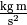
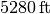
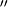
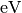
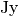
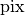
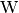

Units and Quantities (astropy.units)¶
Introduction¶
astropy.units handles defining and converting between physical units, and performing arithmetic with physical quantities (numbers with associated units).
Getting Started¶
Most users of the astropy.units package will work with “quantities”: the combination of a value and a unit. The easiest way to create a Quantity is to simply multiply or divide a value by one of the built-in units. It works with scalars, sequences and Numpy arrays:
>>> from astropy import units as u
>>> 42.0 * u.meter
<Quantity 42.0 m>
>>> [1., 2., 3.] * u.m
<Quantity [ 1., 2., 3.] m>
>>> import numpy as np
>>> np.array([1., 2., 3.]) * u.m
<Quantity [ 1., 2., 3.] m>
You can get the unit and value from a Quantity using the unit and value members:
>>> q = 42.0 * u.meter
>>> q.value
42.0
>>> q.unit
Unit("m")
From this simple building block, it’s easy to start combining quantities with different units:
>>> 15.1 * u.meter / (32.0 * u.second)
<Quantity 0.47187... m / s>
>>> 3.0 * u.kilometer / (130.51 * u.meter / u.second)
<Quantity 0.0229867443... km s / m>
>>> (3.0 * u.kilometer / (130.51 * u.meter / u.second)).decompose()
<Quantity 22.9867443... s>
Unit conversion is done using the to() method, which returns a new Quantity in the given unit:
>>> x = 1.0 * u.parsec
>>> x.to(u.km)
<Quantity 30856775814671.914 km>
It is also possible to work directly with units at a lower level, for example, to create custom units:
>>> from astropy.units import imperial
>>> cms = u.cm / u.s
>>> # ...and then use some imperial units
>>> mph = imperial.mile / u.hour
>>> # And do some conversions
>>> q = 42.0 * cms
>>> q.to(mph)
<Quantity 0.93951324266284... mi / h>
Units that “cancel out” become a special unit called the “dimensionless unit”:
>>> u.m / u.m
Unit(dimensionless)
astropy.units is able to match compound units against the units it already knows about:
>>> (u.s ** -1).compose()
[Unit("Bq"), Unit("Hz"), Unit("3.7e+10 Ci")]
And it can convert between unit systems, such as SI or CGS:
.. doctest-skip-all::
>>> (1.0 * u.Pa).cgs
<Quantity 10.0 Ba>
astropy.units also handles equivalencies, such as that between wavelength and frequency. To use that feature, equivalence objects are passed to the to() conversion method. For instance, a conversion from wavelength to frequency doesn’t normally work:
>>> (1000 * u.nm).to(u.Hz)
Traceback (most recent call last):
...
UnitsError: 'nm' (length) and 'Hz' (frequency) are not convertible
but by passing an equivalency list, in this case spectral(), it does:
>>> (1000 * u.nm).to(u.Hz, equivalencies=u.spectral())
<Quantity 299792457999999.94 Hz>
Quantities and units can be printed nicely to strings using the Format String Syntax, the preferred string formatting syntax in recent versions of python. Format specifiers (like 0.03f) in new-style format strings will used to format the quantity value:
>>> q = 15.1 * u.meter / (32.0 * u.second)
>>> q
<Quantity 0.47187... m / s>
>>> "{0:0.03f}".format(q)
'0.472 m / s'
The value and unit can also be formatted separately. Format specifiers used on units can be used to choose the unit formatter:
>>> q = 15.1 * u.meter / (32.0 * u.second)
>>> q
<Quantity 0.47187... m / s>
>>> "{0.value:0.03f} {0.unit:FITS}".format(q)
'0.472 m s-1'
Using astropy.units¶
See Also¶
- FITS Standard for units in FITS.
- The proposed IVOA standard for representing units in the VO.
- OGIP Units: A standard for storing units in OGIP FITS files.
- Standards for astronomical catalogues units.
- IAU Style Manual.
- A table of astronomical unit equivalencies
Reference/API¶
astropy.units.quantity Module¶
This module defines the Quantity object, which represents a number with some associated units. Quantity objects support operations like ordinary numbers, but will deal with unit conversions internally.
Class Inheritance Diagram¶
astropy.units Module¶
This subpackage contains classes and functions for defining and converting between different physical units.
This code is adapted from the pynbody units module written by Andrew Pontzen, who has granted the Astropy project permission to use the code under a BSD license.
Functions¶
| add_enabled_equivalencies(equivalencies) | Adds to the equivalencies enabled in the unit registry. |
| add_enabled_units(units) | Adds to the set of units enabled in the unit registry. |
| brightness_temperature(beam_area, disp) | “Antenna Gain” or “sensitivity” equivalency: Defines the conversion between |
| def_physical_type(unit, name) | Adds a new physical unit mapping. |
| def_unit(s[, represents, register, doc, ...]) | Factory function for defining new units. |
| dimensionless_angles() | Allow angles to be equivalent to dimensionless (with 1 rad = 1 m/m = 1). |
| doppler_optical(rest) | Return the equivalency pairs for the optical convention for velocity. |
| doppler_radio(rest) | Return the equivalency pairs for the radio convention for velocity. |
| doppler_relativistic(rest) | Return the equivalency pairs for the relativistic convention for velocity. |
| get_current_unit_registry() | |
| get_physical_type(unit) | Given a unit, returns the name of the physical quantity it represents. |
| mass_energy() | Returns a list of equivalence pairs that handle the conversion between mass and energy. |
| parallax() | Returns a list of equivalence pairs that handle the conversion between parallax angle and distance. |
| set_enabled_equivalencies(equivalencies) | Sets the equivalencies enabled in the unit registry. |
| set_enabled_units(units) | Sets the units enabled in the unit registry. |
| spectral() | Returns a list of equivalence pairs that handle spectral wavelength, wave number, frequency, and energy equivalences. |
| spectral_density(wav[, factor]) | Returns a list of equivalence pairs that handle spectral density with regard to wavelength and frequency. |
Classes¶
| CompositeUnit(scale, bases, powers[, ...]) | Create a composite unit using expressions of previously defined units. |
| IrreducibleUnit(st[, register, doc, format, ...]) | Irreducible units are the units that all other units are defined in terms of. |
| NamedUnit(st[, register, doc, format, namespace]) | The base class of units that have a name. |
| PrefixUnit(st[, represents, register, doc, ...]) | A unit that is simply a SI-prefixed version of another unit. |
| Quantity | A Quantity represents a number with some associated unit. |
| Unit(st[, represents, register, doc, ...]) | The main unit class. |
| UnitBase | Abstract base class for units. |
| UnitsError | The base class for unit-specific exceptions. |
| UnitsError | The base class for unit-specific exceptions. |
| UnitsWarning | The base class for unit-specific exceptions. |
| UnrecognizedUnit(st[, register, doc, ...]) | A unit that did not parse correctly. |
Class Inheritance Diagram¶
astropy.units.format Module¶
A collection of different unit formats.
Functions¶
| get_format([format]) | Get a formatter by name. |
Classes¶
| Generic() | A “generic” format. |
| CDS() | Support the Centre de Données astronomiques de Strasbourg Standards for Astronomical Catalogues 2.0 format, and the complete set of supported units. |
| Console() | Output-only format for to display pretty formatting at the console. |
| Fits() | The FITS standard unit format. |
| Latex() | Output LaTeX to display the unit based on IAU style guidelines. |
| Unicode() | Output-only format to display pretty formatting at the console using Unicode characters. |
| Unscaled() | A format that doesn’t display the scale part of the unit, other than that, it is identical to the Generic format. |
| VOUnit() | The proposed IVOA standard for units used by the VO. |
Class Inheritance Diagram¶
astropy.units.si Module¶
This package defines the SI units. They are also available in the astropy.units namespace.
| Unit | Description | Represents | Aliases | SI Prefixes |
|---|---|---|---|---|
| A | ampere: base unit of electric current in SI | ampere, amp | Y | |
| a | annum (a) | annum | N | |
| Angstrom | ångström: 10 ** -10 m | AA, angstrom | N | |
| arcmin | arc minute: angular measurement | arcminute | N | |
| arcsec | arc second: angular measurement | arcsecond | N | |
| bar | bar: pressure | N | ||
| Bq | becquerel: unit of radioactivity | becquerel | N | |
| C | coulomb: electric charge | coulomb | N | |
| cd | candela: base unit of luminous intensity in SI | candela | Y | |
| Ci | curie: unit of radioactivity | curie | N | |
| d | day (d) | day | N | |
| deg | degree: angular measurement 1/360 of full rotation | degree | N | |
| eV | Electron Volt | electronvolt | N | |
| F | Farad: electrical capacitance | Farad, farad | N | |
| fortnight | fortnight |  |
N | |
| g | gram (g) | gram | N | |
| H | Henry: inductance | Henry, henry | N | |
| h | hour (h) | hour, hr | N | |
| hourangle | hour angle: angular measurement with 24 in a full circle | N | ||
| Hz | Frequency | Hertz, hertz | N | |
| J | Joule: energy | Joule, joule | N | |
| K | Kelvin: temperature with a null point at absolute zero. | Kelvin | Y | |
| kg | kilogram: base unit of mass in SI. | kilogram | Y | |
| l | liter: metric unit of volume | L, liter | N | |
| lm | lumen: luminous flux | lumen | N | |
| lx | lux: luminous emittence | lux | N | |
| m | meter: base unit of length in SI | meter | Y | |
| mas | arc second: angular measurement | N | ||
| micron | micron: alias for micrometer (um) |  |
N | |
| min | minute (min) | minute | N | |
| mol | mole: amount of a chemical substance in SI. | mole | Y | |
| N | Newton: force |  | Newton, newton | N |
| Ohm | Ohm: electrical resistance | ohm | N | |
| Pa | Pascal: pressure | Pascal, pascal | N | |
| % | percent: one hundredth of unity, factor 0.01 | pct | N | |
| rad | radian: angular measurement of the ratio between the length on an arc and its radius | radian | Y | |
| S | Siemens: electrical conductance | Siemens, siemens | N | |
| s | second: base unit of time in SI. | second | Y | |
| sday | Sidereal day (sday) is the time of one rotation of the Earth. | N | ||
| sr | steradian: unit of solid angle in SI | steradian | N | |
| t | Metric tonne | tonne | N | |
| T | Tesla: magnetic flux density | Tesla, tesla | N | |
| uas | arc second: angular measurement | N | ||
| V | Volt: electric potential or electromotive force | Volt, volt | N | |
| W | Watt: power | Watt, watt | N | |
| Wb | Weber: magnetic flux | Weber, weber | N | |
| wk | week (wk) | week | N | |
| yr | year (yr) | year | N |
astropy.units.cgs Module¶
This package defines the CGS units. They are also available in the top-level astropy.units namespace.
| Unit | Description | Represents | Aliases | SI Prefixes |
|---|---|---|---|---|
| abC | abcoulomb: CGS (EMU) of charge | abcoulomb | N | |
| Ba | Barye: CGS unit of pressure | Barye, barye | N | |
| Bi | Biot: CGS (EMU) unit of current | Biot, abA, abampere, emu | N | |
| C | coulomb: electric charge | coulomb | N | |
| cd | candela: base unit of luminous intensity in SI | candela | N | |
| cm | centimeter (cm) | centimeter | N | |
| D | Debye: CGS unit of electric dipole moment | Debye, debye | N | |
| dyn | dyne: CGS unit of force |  |
dyne | N |
| erg | erg: CGS unit of energy |  |
N | |
| Fr | Franklin: CGS (ESU) unit of charge | Franklin, statcoulomb, statC, esu | N | |
| G | Gauss: CGS unit for magnetic field | Gauss, gauss | N | |
| g | gram (g) | gram | N | |
| Gal | Gal: CGS unit of acceleration | gal | N | |
| K | Kelvin: temperature with a null point at absolute zero. | Kelvin | N | |
| k | kayser: CGS unit of wavenumber | Kayser, kayser | N | |
| mol | mole: amount of a chemical substance in SI. | mole | N | |
| P | poise: CGS unit of dynamic viscosity | poise | N | |
| rad | radian: angular measurement of the ratio between the length on an arc and its radius | radian | N | |
| s | second: base unit of time in SI. | second | N | |
| sr | steradian: unit of solid angle in SI | steradian | N | |
| St | stokes: CGS unit of kinematic viscosity |  |
stokes | N |
| statA | statampere: CGS (ESU) unit of current | statampere | N |
astropy.units.astrophys Module¶
This package defines the astrophysics-specific units. They are also available in the astropy.units namespace.
The mag unit is provided for compatibility with the FITS unit string standard. However, it is not very useful as-is since it is “orphaned” and can not be converted to any other unit. A future astropy magnitudes library is planned to address this shortcoming.
| Unit | Description | Represents | Aliases | SI Prefixes |
|---|---|---|---|---|
| adu | adu | N | ||
| AU | astronomical unit: approximately the mean Earth–Sun distance. | au | N | |
| barn | barn: unit of area used in HEP | N | ||
| beam | beam | N | ||
| bin | bin | N | ||
| bit | b (bit) | b, bit | Y | |
| byte | B (byte) | B, byte | Y | |
| chan | chan | N | ||
| ct | count (ct) | count | N | |
| cycle | cycle: angular measurement, a full turn or rotation | cy | N | |
| Jy | Jansky: spectral flux density | Jansky, jansky | N | |
| lyr | Light year | lightyear | N | |
| M_e | Electron mass |  |
N | |
| M_p | Proton mass | N | ||
| mag | Astronomical magnitude. | Y | ||
| pc | parsec: approximately 3.26 light-years. | parsec | N | |
| ph | photon (ph) | photon | Y | |
| pix | pixel (pix) | pixel | N | |
| R | Rayleigh: photon flux | Rayleigh, rayleigh | N | |
| Ry | Rydberg: Energy of a photon whose wavenumber is the Rydberg constant | rydberg | N | |
| solLum | Solar luminance |  |
L_sun, Lsun | N |
| solMass | Solar mass | M_sun, Msun | N | |
| solRad | Solar radius | R_sun, Rsun | N | |
| Sun | Sun | N | ||
| u | Unified atomic mass unit | Da, Dalton | N | |
| vox | voxel (vox) | voxel | N |
astropy.units.imperial Module¶
This package defines colloquially used Imperial units. By default, they are not enabled. To enable them, do:
>>> from astropy.units import imperial
>>> imperial.enable()
| Unit | Description | Represents | Aliases | SI Prefixes |
|---|---|---|---|---|
| ac | International acre | acre | N | |
| BTU | British thermal unit | btu | N | |
| cal | Thermochemical calorie: pre-SI metric unit of energy |  |
calorie | N |
| cup | U.S. |  |
N | |
| foz | U.S. | fluid_oz, fluid_ounce | N | |
| ft | International foot | foot | N | |
| gallon | U.S. | N | ||
| hp | Electrical horsepower | horsepower | N | |
| inch | International inch | N | ||
| kcal | Calorie: colloquial definition of Calorie | Cal, Calorie, kilocal, kilocalorie | N | |
| kn | nautical unit of speed: 1 nmi per hour | kt, knot, NMPH | N | |
| lb | International avoirdupois pound | pound | N | |
| mi | International mile |  | mile | N |
| nmi | Nautical mile | nauticalmile, NM | N | |
| oz | International avoirdupois ounce | ounce | N | |
| pint | U.S. |  |
N | |
| quart | U.S. | N | ||
| tbsp | U.S. | tablespoon | N | |
| ton | International avoirdupois ton | N | ||
| tsp | U.S. | teaspoon | N | |
| yd | International yard | yard | N |
astropy.units.cds Module¶
This package defines units used in the CDS format.
Contains the units defined in Centre de Données astronomiques de Strasbourg Standards for Astronomical Catalogues 2.0 format, and the complete set of supported units. This format is used by VOTable up to version 1.2.
To include them in compose and the results of find_equivalent_units, do:
>>> from astropy.units import cds
>>> cds.enable()
| Unit | Description | Represents | Aliases | SI Prefixes |
|---|---|---|---|---|
| % | percent | N | ||
| --- | dimensionless and unscaled |  |
N | |
| \h | Planck constant | N | ||
| A | Ampere |  |
Y | |
| a | year | N | ||
| a0 | Bohr radius | N | ||
| AA | Angstrom | Å, Angstrom, Angstroem | N | |
| al | Light year | N | ||
| alpha | Fine structure constant | N | ||
| arcm | minute of arc | arcmin | N | |
| arcs | second of arc |  | arcsec | N |
| atm | atmosphere | N | ||
| AU | astronomical unit | au | N | |
| bar | bar | N | ||
| barn | barn | N | ||
| bit | bit | Y | ||
| byte | byte | Y | ||
| C | Coulomb | N | ||
| c | speed of light | N | ||
| cal | calorie | N | ||
| cd | candela | Y | ||
| Crab | Crab (X-ray) flux | Y | ||
| ct | count | Y | ||
| D | Debye (dipole) | N | ||
| d | Julian day |  |
N | |
| deg | degree |  |
°, degree | N |
| dyn | dyne | N | ||
| e | electron charge | N | ||
| eps0 | electric constant | N | ||
| erg | erg | N | ||
| eV | electron volt |  | N | |
| F | Farad |  |
N | |
| G | Gravitation constant | N | ||
| g | gram | N | ||
| gauss | Gauss | N | ||
| geoMass | Earth mass |  |
Mgeo | N |
| H | Henry |  |
N | |
| h | hour | N | ||
| hr | hour | N | ||
| Hz | Hertz | N | ||
| inch | inch | N | ||
| J | Joule | N | ||
| JD | Julian day | |
N | |
| jovMass | Jupiter mass | Mjup | N | |
| Jy | Jansky |  | N | |
| k | Boltzmann | N | ||
| K | Kelvin |  |
Y | |
| l | litre |  |
N | |
| lm | lumen | N | ||
| Lsun | solar luminosity |  |
solLum | N |
| lx | lux |  |
N | |
| lyr | Light year | N | ||
| m | meter |  |
Y | |
| mag | magnitude | Y | ||
| mas | millisecond of arc | N | ||
| me | electron mass | |
N | |
| min | minute | N | ||
| MJD | Julian day | |
N | |
| mmHg | millimeter of mercury |  |
N | |
| mol | mole | Y | ||
| mp | proton mass | N | ||
| Msun | solar mass |  |
solMass | N |
| mu0 | magnetic constant | µ0 | N | |
| muB | Bohr magneton | N | ||
| N | Newton |  |
N | |
| Ohm | Ohm |  |
N | |
| Pa | Pascal | N | ||
| pc | parsec | N | ||
| ph | photon | Y | ||
| pi | π | N | ||
| pix | pixel |  | Y | |
| ppm | parts per million | N | ||
| R | gas constant | N | ||
| rad | radian | Y | ||
| Rgeo | Earth equatorial radius | N | ||
| Rjup | Jupiter equatorial radius | N | ||
| Rsun | solar radius | solRad | N | |
| Ry | Rydberg | N | ||
| s | second |  |
sec | Y |
| S | Siemens | N | ||
| sr | steradian | N | ||
| Sun | solar unit | Y | ||
| T | Tesla | N | ||
| t | metric tonne | N | ||
| u | atomic mass | N | ||
| V | Volt |  |
N | |
| W | Watt |  | N | |
| Wb | Weber |  |
N | |
| yr | year | N | ||
| µas | microsecond of arc | N |
astropy.units.equivalencies Module¶
A set of standard astronomical equivalencies.
Functions¶
| parallax() | Returns a list of equivalence pairs that handle the conversion between parallax angle and distance. |
| spectral() | Returns a list of equivalence pairs that handle spectral wavelength, wave number, frequency, and energy equivalences. |
| spectral_density(wav[, factor]) | Returns a list of equivalence pairs that handle spectral density with regard to wavelength and frequency. |
| doppler_radio(rest) | Return the equivalency pairs for the radio convention for velocity. |
| doppler_optical(rest) | Return the equivalency pairs for the optical convention for velocity. |
| doppler_relativistic(rest) | Return the equivalency pairs for the relativistic convention for velocity. |
| mass_energy() | Returns a list of equivalence pairs that handle the conversion between mass and energy. |
| brightness_temperature(beam_area, disp) | “Antenna Gain” or “sensitivity” equivalency: Defines the conversion between |
| dimensionless_angles() | Allow angles to be equivalent to dimensionless (with 1 rad = 1 m/m = 1). |